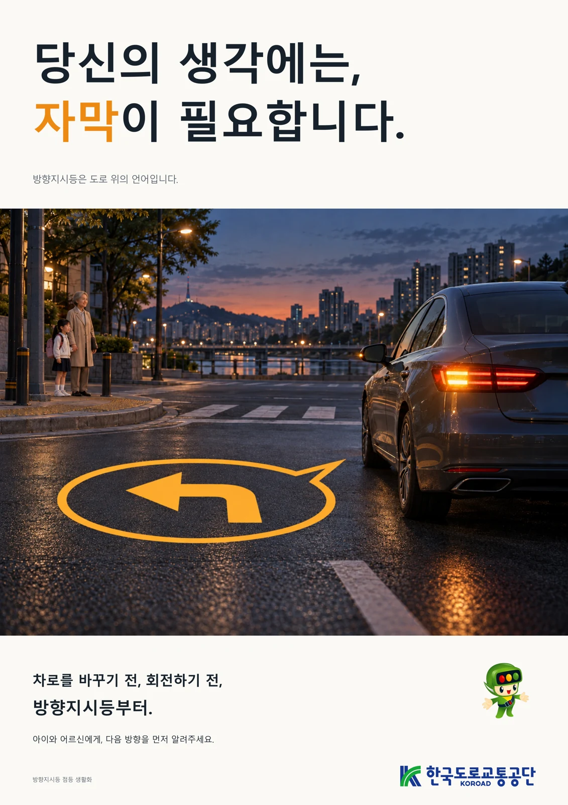
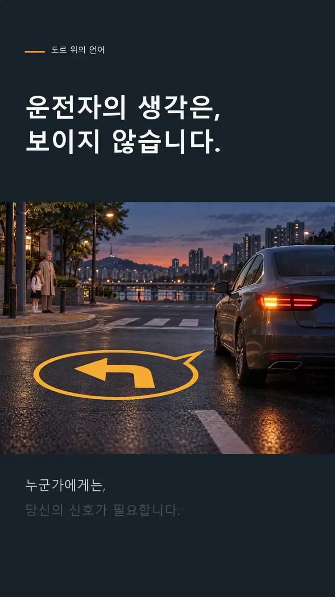
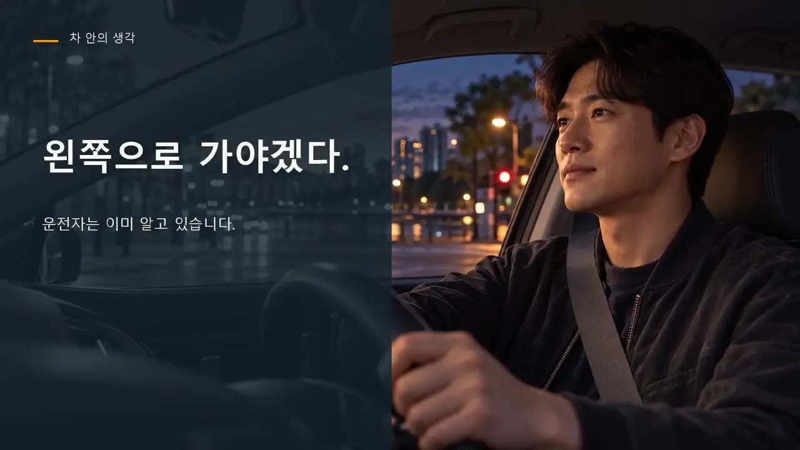

방향지시등을 자막으로 표현하기
하나의 명확한 비유
교통안전 공모전 준비 작업에서 방향지시등을 운전자의 생각을 다른 사람에게 전달하는 자막으로 표현했습니다. 운전자의 다음 행동을 보행자와 다른 운전자가 미리 이해할 수 있게 알리는 행위를 익숙한 언어로 옮긴 기획입니다.
세 매체의 역할
A2 포스터는 핵심 문장과 장면을 한눈에 보여 주고, 30초 숏폼은 짧은 상황과 행동 메시지를 전달하며, 2분 광고영상은 같은 비유를 더 긴 서사로 펼칩니다. 매체 길이는 달라도 중심 메시지가 연결되도록 준비했습니다.
팀 작업과 AI 활용
포스터와 영상에 생성형 AI 이미지·음성 등 제작 지원 도구를 활용했습니다. 개별 제작 분담이 확정되지 않은 사례이므로 전체 결과를 제 단독 촬영·디자인·영상 편집 실적으로 쓰지 않고 AI 활용 팀 작업으로 소개합니다.
결과물 중심의 기록
포스터 편집 원본과 인쇄용 파일, 영상·자막·음성과 작품설명·AI 활용 자료가 남아 있습니다. 실제 교통 장면을 직접 촬영한 다큐멘터리 사진으로 표시하지 않고 창작 캠페인 결과물로 제시합니다.
관객이 알 수 없는 정보를 비유로 바꾸기
작품의 출발은 운전자는 다음 방향을 이미 알지만 차 밖의 어린이·고령자·다른 운전자는 모른다는 정보 차이입니다. 방향지시등을 생각을 번역하는 ‘자막’으로 표현하고 주황 말풍선과 화살표를 일관된 시각 요소로 삼았습니다. 실제 노면 투사 기능을 제안한 장치가 아니라 안전 행동을 설명하는 광고의 비유입니다.
A2포스터는 한 문장과 한 장면, 세로30초는 짧은 인식 전환과 행동 문구, 가로120초는 주변 관객과 안전 행동의 순서에 역할을 나눴습니다. 팀3인 작업에서 개인별 제작 분담은 문서로 확정되지 않아 본인을 단독 촬영·디자인·코딩 담당으로 쓰지 않습니다. AI 원화·합성 음성 등을 활용해 준비한 공익 콘텐츠 결과물입니다.
근거: 교통안전_광고영상_2026/06_대본_스토리보드.txt (20장면/120초); 제작·매체 검토 기록 (교통안전 캠페인)
A2 포스터와 두 길이의 영상

실제 완성 파일
“당신의 생각에는, 자막이 필요합니다” 포스터, “자막을 켜세요” 30초 숏폼 개선본 v2와 “생각의 자막” 2분 광고영상이 있습니다. 아래 포스터와 영상은 실제 준비한 콘텐츠입니다. 웹 열람용 영상은 용량을 줄인 공개본으로 연결합니다.
메시지의 연결
포스터의 문장을 출발점으로 장면과 내레이션·자막을 구성했습니다. 긴 설명을 전달하는 영상과 짧은 행동을 남기는 숏폼을 함께 준비해 같은 주제가 매체마다 어떻게 달리 전달되는지 비교할 수 있습니다.
제작 기록의 역할
AI 활용 내역과 원본·출력 파일의 구분은 결과물의 제작 방식을 설명하는 자료입니다. 생성된 소재가 실제 촬영 결과로 오해되지 않도록 표현하고, 최종 파일의 형식과 길이를 확인한 기록을 함께 정리했습니다.
이미지를 보는 기준
아래 포스터는 공모전용 광고 결과물입니다. 영상의 장면 이미지는 실제 사고나 현장을 증명하는 사진이 아닙니다. 기획·문구·AI 소재·편집이 모여 완성된 팀 콘텐츠로 읽을 수 있도록 설명합니다.


20장면 대본에서 메시지가 완성되는 과정
120초 광고는 장면당6초씩20개로 구성됩니다. 처음30초는 운전자 속생각과 아이·어르신·다른 운전자의 시선을 나란히 보여 줍니다. 30~60초는 ‘빈칸인 다음 방향’에서 작은 불빛과 방향지시등의 의미로 이동합니다. 60~90초는 다른 사람에게 준비할 시간과 주변을 살필 단서를 준다는 의미, 익숙한 길에서도 알리는 습관을 설명합니다. 90초 이후에는 ‘신호 → 주변 확인 → 안전하게 이동’의 순서와 핵심 문장을 정리합니다.
최종 파일은4961×7016px세로포스터,1080×1920·30fps·30초숏폼v2,1920×1080·30fps·120초광고입니다. 원고·SRT·음성·스토리보드와 인쇄용PDF·SVG가 같은 메시지의 제작 근거로 남아 있습니다. 길이·비율은 실제 파일 검사로 확인한 결과물 규격입니다.
세 형식에서 유지한 문장과 행동 순서
포스터의 중심 문장과 영상의 마지막 문장을 같은 ‘생각의 자막’으로 맞추고, 중간 장면은 관객의 판단 시간으로 풀었습니다.2분판의 11~13장면은 ‘준비할 시간’, ‘한 번 더 살필 단서’, ‘대화의 시작’을 차례로 보여 줍니다. 운전자의 조작을 보행자와 다른 운전자의 관점에서 읽게 만드는 부분입니다.14~16장면은 익숙한 길·짧은 이동에도 신호를 보내고 주변을 확인한 뒤 움직이는 행동으로 연결합니다.
이는 방향지시등만 켜면 모든 이동이 안전하다는 메시지로 끝내지 않기 위한 문장 구조입니다. 장면의 주황 불빛과 말풍선은 생각이 보이지 않던 앞부분과 신호가 생긴 뒷부분을 잇고, 큰 자막은 짧은 모바일 화면에서도 핵심 비유를 남기는 역할입니다. 제출용·무손실·인쇄 파일과 영상 길이가 다른 파생본은 하나의 캠페인에서 매체에 맞게 구성한 결과물이며 서로 별개의 공모전 수상작으로 세지 않습니다.
근거: 교통안전_광고영상_2026/06_대본_스토리보드.txt (20장면/120초); 제작·매체 검토 기록 (교통안전 캠페인)
제작 완료 상태와 커뮤니케이션 평가
현재 확인한 단계
완성된 포스터와 두 길이의 영상, 작품설명과 AI 활용 기록을 확인했습니다. 현재 상태는 공모전 준비작의 제작 완료이며 실제 접수·선정·수상 여부는 확인되지 않았습니다.
콘텐츠의 성과와 행동 효과
매체를 완성한 것과 관객의 이해·행동을 바꾼 것은 다릅니다. 조회수·참여도·방향지시등 사용률 개선과 같은 효과를 측정한 기록이 없으므로 추가하지 않습니다. 이 사례의 분명한 산출물은 비유를 여러 형식으로 구현한 콘텐츠입니다.
이후 확인할 질문
처음 본 사람이 방향지시등과 자막의 연결을 이해하는지, 영상 길이에 따라 핵심 행동을 기억하는지 검토할 수 있습니다. 자막 가독성, 작은 화면에서의 정보량과 내레이션의 이해도 역시 후속 확인 대상입니다. 아직 수행한 사용자 실험으로 쓰지 않습니다.
남긴 경험
공학과 안전의 주제를 일상적인 메시지로 번역하고 포스터·숏폼·긴 영상으로 확장했습니다. 제작 방식과 팀 기여를 드러내며 결과물 자체와 기대효과를 구분해 설명하는 캠페인 기획 사례입니다.
생성 소재와 편집의 기록
제작 기록에는 ChatGPT의 콘셉트·카피·스토리보드·코드 보조, 생성 원화, Supertonic 3 M3 한국어 TTS, 합성음악·효과음, FFmpeg모션그래픽을 구분해 남겼습니다. 현장 촬영이나 AI영상모델로 연속 실사동작을 만든 작업과 구분합니다. 제공된 공식CI·캐릭터는 주최기관의 공식 채택·수주 광고라는 근거가 아닙니다.
완성본을 평가할 때는 관객이 ‘자막’을 방향지시등의 비유로 읽는지, 행동 문구가 기억되는지,30초·120초의 정보량이 길이에 맞는지를 확인할 수 있습니다. 현재 조회수·교통행동 변화·실제 접수·수상은 확인되지 않았습니다. 검토된성과는 세 형식의 파일 완성과 대본·출처·AI활용 내역을 함께 정리한 콘텐츠 패키지입니다.
근거: 교통안전_광고영상_2026/06_대본_스토리보드.txt (20장면/120초); 제작·매체 검토 기록 (교통안전 캠페인)
기록의 근거
근거: 교통안전 광고포스터의 작품설명·AI 활용내역, A2 출력물, 30초 개선본 v2, 2분 광고영상과 제작 기록. 영상은 웹 열람용으로 용량을 최적화했습니다.
2026-10-20 기준. 개인 담당과 팀 기여, 해석·계획과 실측·완료 결과를 구분했습니다.